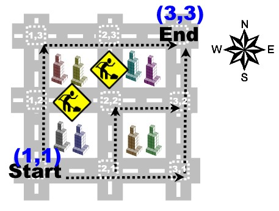

 We have a small challenge for you. As illustrated
in the figure, we want you to determine in how many ways can
you go from a start position A to an end position B. By
position we mean a crossing between two roads. There is a small
catch, you are not allowed to travel South or West.
Given a grid of NxN roads, a starting position
A=(Ax,Ay) and a ending position
B=(Bx,By), your task is to count in how
many ways can you go from A to B without ever travelling
South or West. You can assume that there will always be at least one
valid path between the start and the end positions.
The first line of input contains C (0 <
C < 1000), the number of test cases that follows.
Each test case starts with a line containing the
number N (1 < N <= 30) of vertical and horizontal
roads, followed by two lines containing the start position and the end
position. Each position is defined by two integer coordinates
separated by a single space.
The next line contains the number of places,
W (limited by the size of the grid), where the roads are
discontinued. The following W lines, describe such places. Each
place is defined by two integer coordinates
Px and Py (road numbers between
1 and N) followed by a symbol
D (D in {N,E,S,W}) indicating that there are men working
in the direction
D with respect to junction
(Px,Py). The three values that
characterize a place are separated by a single space.
For each input case your program must output a line indicating the
number of ways you can go from the start to the end point, given that
you are not allowed to travel South or West.
Problem
Input
Output
Sample Input
The first test case illustrates the figure.
2
3
1 1
3 3
2
2 3 S
2 2 W
3
1 1
3 3
0
Sample Output
3
6
Problem setter: Fernando Silva